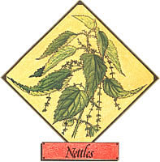

Lately, more and more people have begun to understand just how limited - in both variety and nutritional value - our "modern" diets hove become. This realization has sparked a new and widespread interest in the culinary and therapeutic uses of herbs . . . those plants which - although not well-known today - were, just one short generation ago, honored "guests" on the dinner tables and in the medicine chests of our grandparents' homes. In this regular feature, MOTHER examines the availability, cultivation, and benefits of our "forgotten" vegetable foods and remedies . . . and - we hope - helps prevent the loss of still another bit of ancestral lore.
Contrary to popular opinion, the common nettle is more than a pesky, stinging weed. It has - since ancient times - been an important source of food, fiber, and pharmaceuticals. Although the nettle tribe (members of the family Urticaceae whose name is derived from the Latin uro, to burn) includes more than 500 species worldwide . . . the bright green to gray green stinging or common nettles (genus Urtica ) are the most prevalent throughout the U.S. and Canada.
This single-stemmed perennial, a plant that spreads by way of both seeds and creeping roots, can sometimes reach a height of seven feet. Its paired leaves are heartshaped and coarsely veined, sharply toothed, and covered with fuzzy bristles. The herb likes moist ground, and its presence is frequently an indicator of rich soil.
Before flax was introduced to northern Europe, fiber from the thick, square, hairy stems of nettles was woven into "linen". In Scotland, the material was used well into the seventeenth century, and was claimed to be one of the most durable of fabrics. Europeans and native Americans also utilized nettle fiber to make strong ropes and superior fishing nets, and - during World War I - Germany and Austria found the fibers to provide a good substitute for cotton.
For over 2,000 years, doctors have recognized the herb's ability to stop all kinds of internal and external bleeding, and considered it a good blood purifier. Taken as a tea, it has been found to help cure mucus congestion, skin irritations, water retention, and diarrhea. The beverage is also said to help nursing mothers produce milk . . . and stimulate the digestive glands of the stomach, intestines, liver, pancreas, and gall bladder. Applied externally, nettle tea - it is claimed- relieves rheumatism in both people and animals . . . makes a first-class gargle for mouth and throat infections . . . helps to clear up acne and eczema . . . and promotes the healing of burns.
Nettle juice will even ease the stinging of the rash brought about by contact with the plant's own bristled leaves! (You can also use the "sap" of aloe, dock, and jewelweed for this purpose . . . see the article on page 8.) Additionally, if you simmer a handful of young nettles for two hours in a quart of water - then strain and bottle the liquid - you'll have a potion that, when used regularly as a scalp conditioner, will make hair soft and glossy.
Despite all this, nettles (which contain tannic acid, lecithin, chlorophyll, iron, silicic acid, lime, potassium, phosphorus, sulfur, sodium, chlorine, and vitamins A and C) are most popular as a nutritious potherb. Using a glove and knife, gather the young, tender plants in April or May when they're about six inches tall . . . wash them in running water . . . place them, still dripping, in a saucepan . . . steam the greens, covered, for about 20 minutes . . . then chop and serve the vegetable with salt, pepper, and butter.
You can also add nettle greens to soup . . . make a Scottish "nettle pudding" with leeks, broccoli, and rice . . . or brew up a delicious herb drink similar to ginger beer. (For a recipe for that herb drink, see page 76.) Furthermore, fresh leaves, when boiled in well-salted water for ten minutes, can be used (like rennet) to curdle milk for cheesemaking.
When dried, the plant is 40% protein, rivaling cottonseed meal as a source of the vital nutrient. Nettle fodder is said to make cows give more milk, and - if powdered and added to their feed - induce chickens to lay more eggs. Also, since the herb contains 7% nitrogen (dry weight), it makes an excellent garden mulch or fertilizer.
Finally, some folks even hang a bunch of fresh leaves from the ceiling to repel flies!
|
 Chickens fed on nettles lay more eggs. . . Cows, fed nettle hay, give more milk. |
|
|